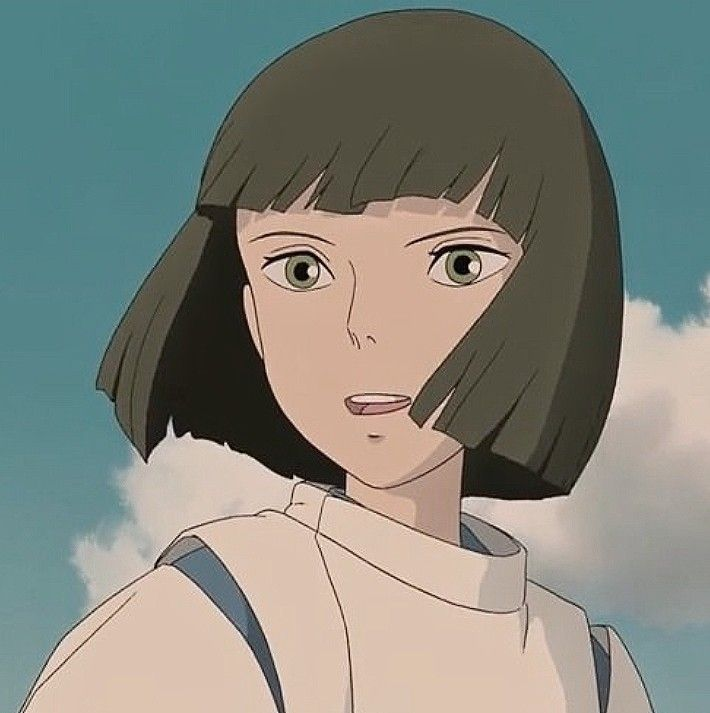
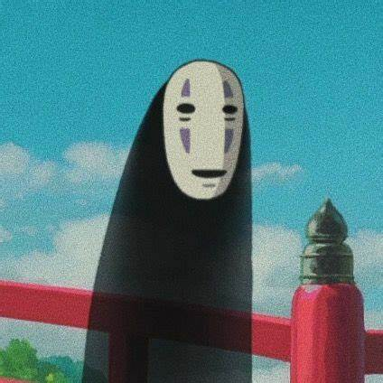
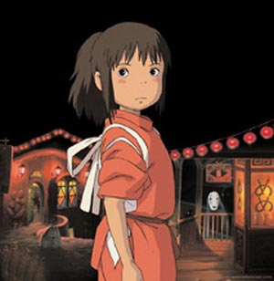
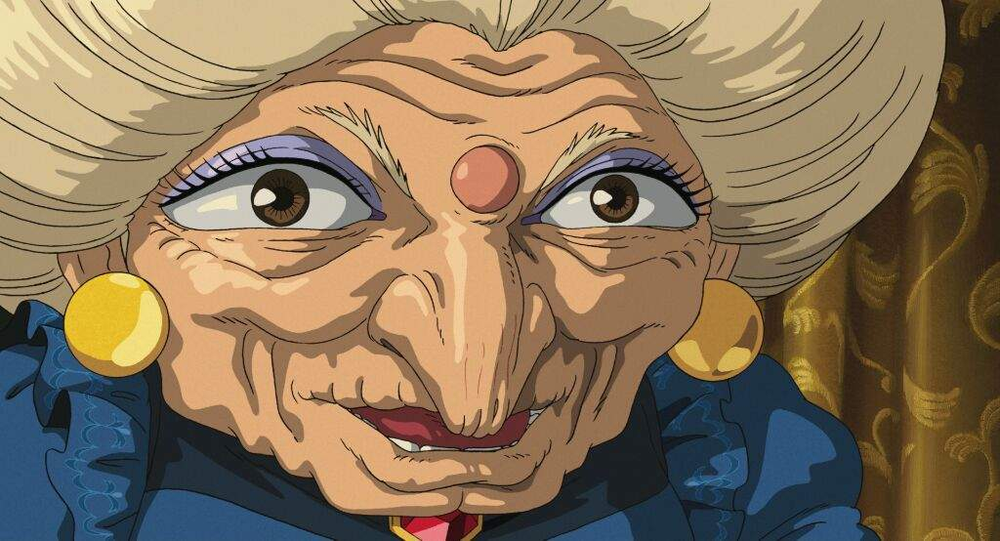
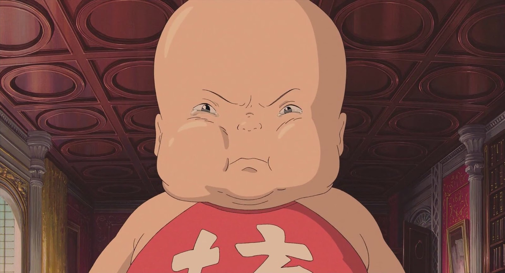
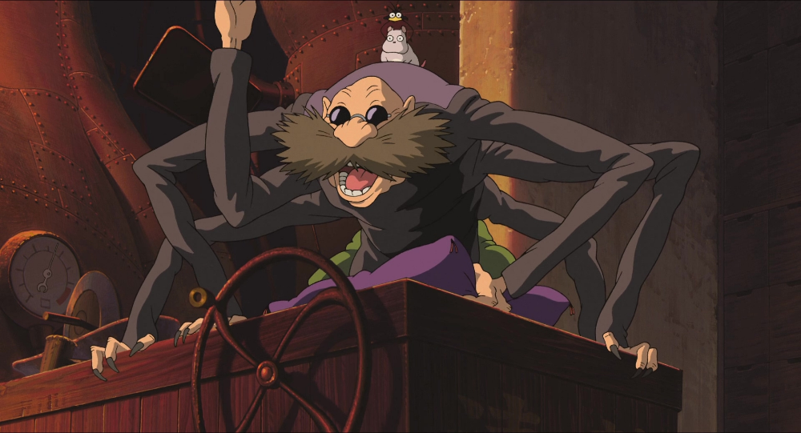
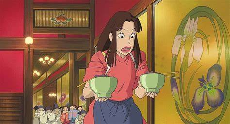
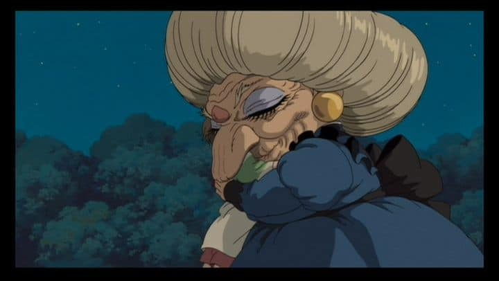
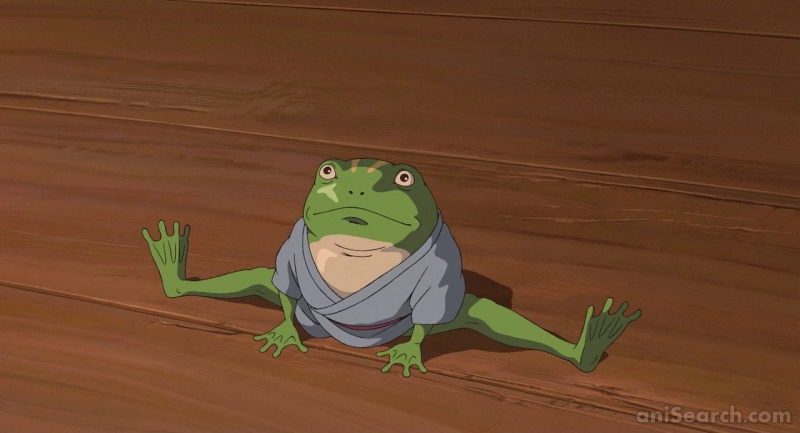
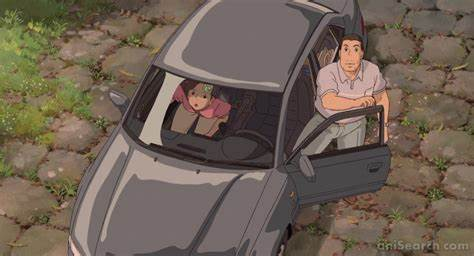

PERSONAGENS
- Haku.
- Kaonashi
- Chihiro Ogino.
- Yubaba.
- Boh.
- Kamaji.
- Lin.
- Zeniba.
- Aogaeru.
- Yuuko e Akio Ogino.
- haku

- Mão direita de Yubaba, sempre está procurando ajudar Chihiro.
- Dublado por: Miyu Irino.
- O personagem tem 10 anos.
- Kaonashi

- Kaonashi ou "Sem Face" como é mais conhecido,
é o pergonagem chihiro ajuda
e que
o mesmo tem uma grande admiração pela menina chihiro.
- Dublado por: Bob Bergen.
- Idade desconhecida.
- Chihiro Ogino

- Chihiro ogino nossa personagem principal,
uma menina bem corajosa que acaba
caindo num mundo onde, a primeira vista,
ela é a única humana, mesmo assustada
ela faz de tudo para conseguir voltar para seu mundo
e salvar seus pais.
- Dublado por: Rumi Hiiragi.
- A personagem te 10 anos.
- Yubaba

- bruxa, dona da casa termal. É gananciosa e maquiavélica.
- Dublado por: Mari Natsuki.
- Idade desconhecida.
- Boh

- Boh é o personagem protegido por Yubaba no filme,
ele tem uma extrema
importância para a personagem de yubaba.
- Dublado por: Monica Bertolotti.
- Idade desconhecida.
- Kamaji

- Kamaji foi o personagem qual a chihiro teve que
trabalhar para poder sobreviver
e libertar seus pais.
- Dublado por: Sugawara Bunta.
- Idade desconhecida.
- Lin

- Lin foi a primeira humana que chihiro conheceu
naquele mundo e que ajudou-a
a entender como as
coisas funcionavam lá.
- Dublado por: Yumi Tamai.
- A p ersonagem tem 19 anos.
- Zeniba

- Zeniba é irmã gêmea de yubaba, uma bruxa tão
perigosa quanto a irmã.
- Dublado por: Mari Natsuki.
- Idade desconhecida.
- Aogaeru

- Ogaeru o sapo do filme que é muito ganancioso e
acaba colocando sua vida em
risco após intimidar
uma criatura perigosa em troca de conseguir ouro.
- Dublado por: Tatsuya Gashuin
- Idade desconhecida.
- Yuuko e Akio Ogino

- Yuuko e Akio Ogino são os pais da menina chihiro,
que são enfeitiçados pela
refeição que encontram no
caminho de sua nova casa.
- Yuuko Ogino dublado por: Yasuko Sawaguchi
- Akio Ogino dublado por: Takashi Naitô
Volte a pagina inicial